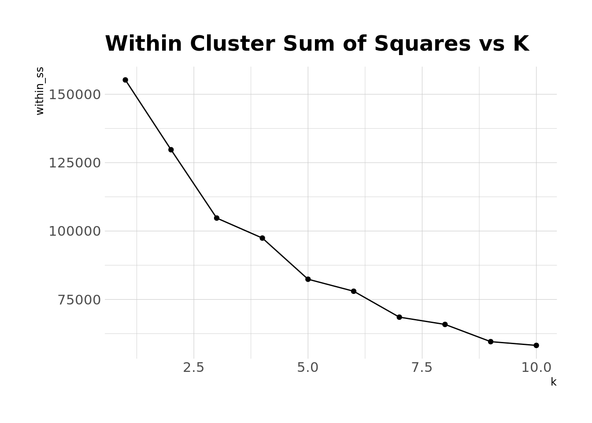

set.seed(0408)
library(schrute) #office dialogue
library(tidyverse) #data wrangling tools
library(broom) #tidying models
library(tidytext) #tools for working with text data
library(knitr) #markdown functionality
library(kableExtra) #styling for tables
library(hrbrthemes) #ggplot themes
theme_set(theme_ipsum())
office <- theoffice %>%
filter(as.numeric(season) <= 7)Would I rather be feared or loved? Easy. Both.
A few weeks ago, I did some exploratory analyses of dialogue from The Office. That blog could easily have been a lot longer than it was, and so instead of writing some gigantic post that would have taken 30 minutes+ to read, I decided to separate it out into several different blog posts. And so here’s volume 2.
In this post, I want to try using k-means clustering to identify patterns in who talks to whom in different episodes.
Once again, huge thanks to Brad Lindblad, the creator of the {schrute} package for R, which makes the dialogue from The Office easy to work with.
Setup
As in the previous blog, I’ll be using the {schrute} package to get the transcripts from the show, and I’m going to limit the dialogue to the first 7 seasons of the show, which is when Michael Scott was around. I’ll also use a handful of other packages for data cleaning, analysis, and visualization. Let’s load all of this in and do some general setup.
I’m not superstitious, but I am a little stitious.
Now that we have our data read in and our packages loaded, let’s start with the cluster analysis. The goal here is going to be to figure out if there are certain “types” (clusters, groups, whatever you want to call them) of episodes. There are several frameworks we could use to go about doing this. One approach would be a mixture modeling approach (e.g. latent profile analysis, latent class analysis). I’m not doing that here because I want each episode to be an observation when we cluster, and I’m not sure we have enough episodes here to get good model fits using this approach. Instead, I’m going to use k-means clustering, which basically places observations (episodes, in this case) into one of k groups (where k is supplied by the user) by trying to minimize the “distance” between each observation and the center of the group. The algorithm iteratively assigns observations to groups, updates the center of each group, reassigns observations to groups, etc. until it reaches a stable solution.
We can also include all sorts of different variables in the k-means algorithm to serve as indicators. For this analysis, I’m going to use the number of exchanges between different characters per episode – i.e. the number of exchanges between Michael and Jim, between Jim and Dwight, etc. – to estimate groups. This could tell us, for instance, that one “type” of Office episode features lots of exchanges between Michael and Dwight, lots between Pam and Jim, and few between Pam and Michael. One consideration when we use the k-means algorithm is that, because we’re looking at distance between observations, we typically want our observations to be on the same scale. Fortunately, since all of our indicators will be “number of lines per episode,” they’re already on the same scale, so we don’t need to worry about standardizing.
Let’s go ahead and set up our data. I’m also going to decide to only use the 5 characters who speak the most during the first 7 seasons in this analysis, otherwise the number of combinations of possible exchanges would be huge. These five characters are:
top5_chars <- office %>%
count(character, sort = TRUE) %>%
top_n(5) %>%
pull(character)
top5_chars[1] "Michael" "Dwight" "Jim" "Pam" "Andy" Ok, so our top 5 characters here are Michael, Dwight, Jim, Pam, and Andy. Since Andy doesn’t join the show until season 3, I’m actually going to narrow our window of usable episodes to those in seasons 3-7. Otherwise, the clustering algorithm would likely group episodes with a focus on those in seasons 1 and 2, where Andy will obviously have 0 lines, vs episodes in later seasons.
Additionally, we want to code our changes so that Michael & Jim is the same as Jim & Michael.
combos <- t(combn(top5_chars, 2)) %>%
as_tibble() %>%
mutate(comb = glue::glue("{V1}&{V2}"),
comb_inv = glue::glue("{V2}&{V1}"))
replace_comb <- combos$comb
names(replace_comb) <- combos$comb_inv
office_exchanges <- office %>%
filter(as.numeric(season) >= 3) %>%
mutate(char2 = lead(character)) %>% #this will tell us who the speaker is talking to
filter(character %in% top5_chars &
char2 %in% top5_chars &
character != char2) %>% #this filters down to just exchanges between our top 5 characters
mutate(exchange = glue::glue("{character}&{char2}") %>%
str_replace_all(replace_comb)) %>% #these lines ensure that, e.g. Michael & Jim is coded the same as Jim & Michael
select(season, episode_name, character, char2, exchange) %>%
count(season, episode_name, exchange) %>%
pivot_wider(names_from = exchange,
values_from = n,
values_fill = list(n = 0))
head(office_exchanges)# A tibble: 6 × 12
season episode_name `Dwight&Andy` `Dwight&Jim` `Dwight&Pam` `Jim&Andy`
<int> <chr> <int> <int> <int> <int>
1 3 A Benihana Christma… 6 10 17 10
2 3 Back from Vacation 1 16 6 2
3 3 Beach Games 8 8 3 1
4 3 Ben Franklin 0 14 2 0
5 3 Branch Closing 0 5 1 4
6 3 Business School 0 10 3 0
# … with 6 more variables: `Jim&Pam` <int>, `Michael&Andy` <int>,
# `Michael&Dwight` <int>, `Michael&Jim` <int>, `Michael&Pam` <int>,
# `Pam&Andy` <int>Great – now our data is all set up so that we know the number of lines exchanged between main characters in each episode. We can run some clustering algorithms now to see if there are patterns in these exchanges. To do this, we’ll fit models testing out 1-10 clusters. We’ll then look at the error for each of these models graphically and use this to choose how many clusters we want to include in our final model.
clusters_fit <- tibble(
k = c(1:10),
km_fit = map(c(1:10), ~kmeans(office_exchanges %>% select(-c(1:2)), centers = .))
) %>%
mutate(within_ss = map_dbl(km_fit, ~pluck(., 5)))
clusters_fit %>%
ggplot(aes(x = k, y = within_ss)) +
geom_point() +
geom_line() +
labs(
title = "Within Cluster Sum of Squares vs K"
)
We can see that error decreases as we add more clusters, and error will always decrease as k increases. But we can also see that the rate of decrease slows down a bit as we increase our number of clusters. Ideally, there would be a definitive bend, or “elbow” in this plot where the rate of decrease levels off (which is also the number of clusters we’d choose), but that’s not quite the case here. It seems like there’s some slight elbow-ing at 5 clusters, so let’s just go ahead and choose that. Now we can look at the patterns of exchanges in each of these clusters.
office_clustered <- augment(clusters_fit$km_fit[[5]], data = office_exchanges)
clusters_long <- office_clustered %>%
mutate(season = as_factor(season)) %>%
group_by(.cluster) %>%
summarize_if(is.numeric, mean, na.rm = TRUE) %>%
ungroup() %>%
pivot_longer(cols = -c(".cluster"),
names_to = "chars",
values_to = "lines")
clusters_long %>%
ggplot(aes(x = lines, y = chars, fill = .cluster)) +
geom_col() +
facet_wrap(~.cluster, ncol = 2, scales = "free_y") +
#scale_y_reordered() +
scale_fill_ipsum() +
theme_minimal() +
labs(
title = "Types of Office Episodes"
) +
theme(
legend.position = "none"
)So, these plots show us the average number of exchanges between characters by cluster. Cluster 1 episodes seem to center around exchanges between Michael and Pam, and we also see a fair amount of exchanges between Michael & Jim, Michael & Dwight, and Jim & Pam. Cluster 2 episodes overwhelmingly feature interactions between Michael and Dwight. Cluster 3 episodes have relatively few exchanges between all of our main characters – this probably means that there’s a lot of side character action going on (recall that we didn’t include exchanges between anyone other than Michael, Dwight, Jim, Pam, and Andy in our clustering algorithm). Cluster 4 episodes have a lot of Michael and Andy interactions, along with a fair number of Michael-Dwight and Jim-Pam interactions. And Cluster 5 seems to be predominantly Michael and Jim, but also a fair amount of Michael-Dwight and Dwight-Jim, which makes sense. Usually when Jim talks to Michael in the show, Dwight finds a way to intrude.
One thing to remember is that these clusters aren’t necessarily balanced. As the table below shows, most episodes fit into Cluster 3.
office_clustered %>%
count(.cluster, name = "num_episodes") %>%
kable(format = "html") %>%
kable_styling(bootstrap_options = c("condensed", "striped", "hover"))| .cluster | num_episodes |
|---|---|
| 1 | 16 |
| 2 | 10 |
| 3 | 60 |
| 4 | 8 |
| 5 | 17 |
Another thing to keep in mind is that, across the all of the characters, Michael has far and away the most lines, so his interactions tend to drive this clustering. If we centered and scaled our variables, this would likely change, but we’d also lose some of the interpretability that comes with working in the raw metrics.
Finally, let’s just choose a random episode from each cluster to see which episodes are falling into which categories.
office_clustered %>%
group_by(.cluster) %>%
sample_n(size = 1) %>%
select(.cluster, season, episode_name) %>%
kable(format = "html") %>%
kable_styling(bootstrap_options = c("hover", "condensed", "striped"))| .cluster | season | episode_name |
|---|---|---|
| 1 | 3 | Women's Appreciation |
| 2 | 3 | The Coup |
| 3 | 3 | Diwali |
| 4 | 7 | Andy's Play |
| 5 | 3 | The Merger |
That’s all for now. I might do one more with some predictive modeling in the future.
Reuse
Citation
BibTeX citation:
@online{ekholm2020,
author = {Ekholm, Eric},
title = {Scrantonicity - {Part} 2},
date = {2020-04-16},
url = {https://www.ericekholm.com/posts/scrantonicity-part-2},
langid = {en}
}
For attribution, please cite this work as:
Ekholm, Eric. 2020. “Scrantonicity - Part 2.” April 16,
2020. https://www.ericekholm.com/posts/scrantonicity-part-2.